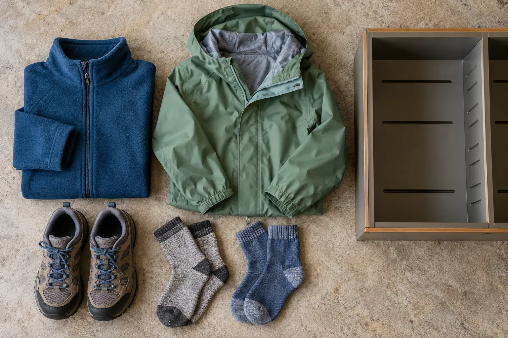

Base
Job: stay comfortable while walking. Choose a normal shirt the child already tolerates. Avoid a bulky base that cannot be adjusted when the parking lot is warm.
HOWE CAVERNS · 52°F · 139 STAIRS · NO BAGS
Dress the child for the cave, not the parking lot. One warm layer, one closed-toe shoe test and a deliberate pocket plan beat hauling options you cannot take underground.

A 52°F cave can feel pleasant for the first five minutes and chilly after a long stretch of walking, waiting and riding the boat. Outside, an October parking lot may be warmer, colder, wet or windy. The mistake is dressing only for one environment. The useful answer is a small system: a normal indoor base, a warm layer that can be zipped or removed, a light outer layer only when outside weather requires it, and shoes that can manage stairs and damp walking surfaces.
This page answers the narrow question of what to wear and where to put essentials. For arrival, tickets, accessibility, food and the complete day plan, use the separate Howe Caverns with kids guide. The two pages should work together, not compete for the same question.
Have the child put on the exact shirt, warm layer, pants, socks and shoes planned for the tour. Zip everything. Walk one flight of stairs up and down several times. Sit for two minutes. Reach overhead and bend to touch the shoes. The test is not athletic; it catches sleeves that cover hands, pants that drag, shoes that pinch and layers that become sweaty immediately.
Next, assign pockets. An adult keeps the car key and any permitted essential item that truly must go underground. Do not promise that a phone, medicine pouch, waist pack or other object will be allowed merely because it is small. Howe's current page says bags of any kind are not allowed; contact the attraction before arrival about any medical, access or equipment need. The staff's current rule controls.
Do not debut new boots at the cave. A stiff shoe can be worse than a familiar walking shoe. The kids' footwear fit guide explains toe room, heel hold and the real movement test. Cave-specific instructions still win: Howe currently requires closed-toe footwear and excludes flip-flops.
Keep a labeled change-of-clothes bag, dry socks, backup shoes, heavier coat, snacks and water in the vehicle. Those items solve the before-and-after problem without colliding with the cave's bag rule. Food and beverages are not allowed in the cave. Feed children before the check-in window, use the restroom, and keep the after-tour snack easy to find.
For families who already own what they need, buy nothing. If a real gap remains, compare a child-size fleece layer, lightweight rain shell or closed-toe walking shoe category by fit and return terms. The links below are paid Amazon links; the editorial decision comes first, and no product shown on this page was tested.
Howe's current official pricing page says Traditional Tour reservations are online-only, everyone must reserve the same tour time, and children 16 and under must be accompanied by an adult age 18 or older. It currently lists adult tickets at $29.50, seniors at $26.50, ages 5–12 at $19.50, and children four and under free, before taxes and fees. Those are volatile details, not a promise. Recheck the official pricing page on the day you book.
The tour page asks guests to arrive 15–30 minutes before departure and describes the Traditional Tour as about 90 minutes. Build the clothing change, restroom and shoe check into that window. Do not use the final five minutes to discover that a child's sweatshirt is in a packed suitcase.
Howe says the cave is not wheelchair accessible and that wheeled devices, including strollers, walkers and wheelchairs, are not permitted in the cave. For infants and toddlers, its page currently permits front carriers and unframed back carriers but not framed carriers. That is not a reason to improvise a carrier fit at the entrance. Follow the carrier manufacturer's instructions, check the child's airway and adult balance, and call Howe about the current rule before booking.
ADA service animals are permitted, but the official page asks guests to call the business office because the boat segment needs planning. Ask about the exact mobility, sensory or medical need rather than relying on a general accessibility label.
Hot outside: wear the base layer into the building and carry the fleece by hand until staff directs the group; avoid overheating before the cave. Cold or wet outside: use the shell for the parking-lot leg, then decide whether it can stay comfortably on the body underground. Child refuses the layer: do not force a 90-minute commitment on hope. Use the building's public areas only if currently open, or leave and choose another day. Wet shoes: switch to the dry pair in the car before check-in.
For the broader go/shorten/leave call, use the family weather cutoff. The cave climate is stable; the drive, parking lot and child's capacity are not.
Skip expedition boots, giant insulated coats, loose scarves, dangling accessories and any bag intended only to hold choices. Do not buy “waterproof” footwear without checking comfort, traction, fit and return terms. Do not assume a product's temperature claim predicts one child's comfort. The useful unit is the complete outfit on the actual child, tested on stairs.
Postpone when a child cannot manage the stairs safely, is already cold or ill, cannot tolerate the clothing required for comfort, or cannot follow the group's no-bag and stay-together rules. Families needing step-free cave access should not treat this tour as an accessible substitute; call Howe for current options and consider a different attraction. A missed reservation is frustrating. A long, cold, unsafe tour is worse.
MAKE THE DAY COUNT
Build the plan your family can finish well, then leave enough energy for the next part of the day.
More family plansTHE USEFUL STUFF
These are practical categories to compare—not a reason to overpack. Check fit, specifications and current reviews before buying.
Paid links: As an Amazon Associate I earn from qualifying purchases. You pay no additional cost.
Compare current size guidance, zipper comfort, sleeve length, care instructions and return terms on the actual child.
See current options → COMPARE ON AMAZONUse a shell only when outside weather earns it; verify fit over the warm layer and the maker’s exact water-protection claim.
See current options → COMPARE ON AMAZONPrioritize familiar fit, secure closure, heel hold and stair comfort; Howe’s current tour rule excludes flip-flops.
See current options →